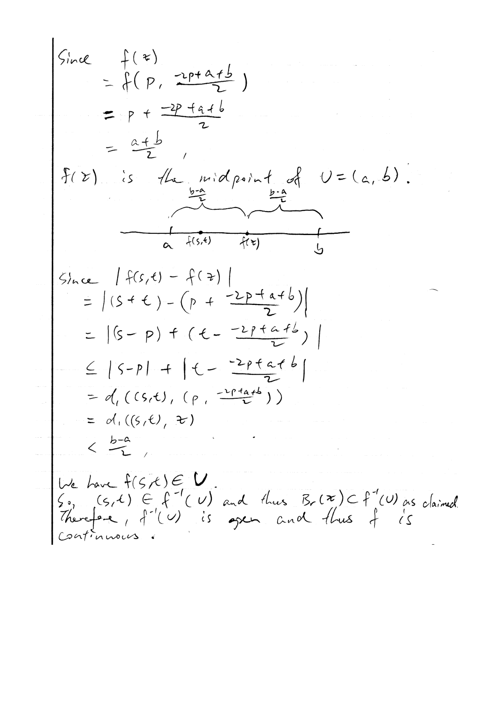

MATH 5690 (Topology) · Chapter 5 Homework
Problems first; ALL solutions together at the end. The comps problem is quoted verbatim from the CSULA topology comprehensive exam (solution by Claude - comps have no key). The assigned main-textbook problems are inlined verbatim (cropped from Morris, Topology Without Tears); official solutions are appended. (NB: the Section 5.1-5.2 official solutions file was missing from the course page; the Hatcher #13 student
solution is appended.)
Problems
Assigned problems (Chapter 5)
$\bullet$ Spring 2010 topology comps, Problem 3.
$\bullet$ Main textbook: Section 5.1 #1-3, 5-9, 11, 13; Section 5.2 #1, 7. [Official solutions file missing.]
$\bullet$ Hatcher (p. 17) #13, 15. (A student's solution to #13 is appended.)
Comprehensive-exam problem (Spring 2010, #3) - verbatim
Let $X$ be a topological space, and let $Y$ be a Hausdorff space. Let $f,g$ be two continuous functions from $X$ to $Y$. Let $A=\{x\in X\mid f(x)=g(x)\}$. Show that $A$ is closed in $X$.
Hatcher (p. 17) #13, 15 - verbatim
#13. Show the two maps $\mathbb{R}^2\to\mathbb{R}$ sending $(x,y)$ to $x+y$ and $xy$ are continuous, using only definitions and results from this class, not results from calculus for example.
#15. Let $\mathbb{R}_h$ denote $\mathbb{R}$ with the `half-open interval topology' having as basis the intervals $[a,b)$. (a) For a subset $A\subseteq\mathbb{R}_h$ show that a point $x$ lies in the closure of $A$ if and only if there is a sequence $\{x_n\}$ in $A$ such that $x_n\geq x$ and $|x_n-x|\to 0$. (b) Show that a function $f:\mathbb{R}_h\to\mathbb{R}$ (with the usual topology on $\mathbb{R}$) is continuous if and only if it is continuous from the right at each point $x$, that is, $\lim f(x+\epsilon)=f(x)$ where the limit is as $\epsilon\to 0$ with $\epsilon>0$.
MAIN-TEXTBOOK PROBLEMS (Morris, Topology Without Tears - assigned exercises, verbatim)
Exercises 5.1
$\bullet$ #1.
(i) Let $f : (X, \tau) \to (Y, \tau_1)$ be a constant function. Show that $f$ is continuous.
(ii) Let $f : (X, \tau) \to (X, \tau)$ be the identity function. Show that $f$ is continuous.
$\bullet$ #2. Let $f : \mathbb{R} \to \mathbb{R}$ be given by $f(x) = -1$ if $x \leq 0$, and $f(x) = 1$ if $x > 0.$
(i) Prove that $f$ is not continuous using the method of Example 5.1.6.
(ii) Find $f^{-1}\{1\}$ and, using Proposition 5.1.9, deduce that $f$ is not continuous.
$\bullet$ #3. Let $f : \mathbb{R} \to \mathbb{R}$ be given by $f(x) = x$ if $x \leq 1$, and $f(x) = x + 2$ if $x > 1.$ Is $f$ continuous? (Justify your answer.)
$\bullet$ #5. Let $(X, \tau)$ and $(Y, \tau_1)$ be topological spaces and $\mathcal{B}_1$ a basis for the topology $\tau_1$. Show that a map $f : (X, \tau) \to (Y, \tau_1)$ is continuous if and only if $f^{-1}(U) \in \tau$, for every $U \in \mathcal{B}_1$.
$\bullet$ #6. Let $(X, \tau)$ and $(Y, \tau_1)$ be topological spaces and $f$ a mapping of $X$ into $Y$. If $(X, \tau)$ is a discrete space, prove that $f$ is continuous.
$\bullet$ #7. Let $(X, \tau)$ and $(Y, \tau_1)$ be topological spaces and $f$ a mapping of $X$ into $Y$. If $(Y, \tau_1)$ is an indiscrete space, prove that $f$ is continuous.
$\bullet$ #8. Let $(X, \tau)$ and $(Y, \tau_1)$ be topological spaces and $f : (X, \tau) \to (Y, \tau_1)$ a continuous mapping. Let $A$ be a subset of $X$, $\tau_2$ the induced topology on $A$, $B = f(A)$, $\tau_3$ the induced topology on $B$ and $g : (A, \tau_2) \to (B, \tau_3)$ the restriction of $f$ to $A$. Prove that $g$ is continuous.
$\bullet$ #9. Let $f$ be a mapping of a space $(X, \tau)$ into a space $(Y, \tau')$. Prove that $f$ is continuous if and only if for each $x \in X$ and each neighbourhood $N$ of $f(x)$ there exists a neighbourhood $M$ of $x$ such that $f(M) \subseteq N$.
$\bullet$ #11. Let $f : \mathbb{R} \to \mathbb{R}$ be a continuous function such that $f(q) = 0$ for every rational number $q$. Prove that $f(x) = 0$ for every $x \in \mathbb{R}$.
$\bullet$ #13. Let $(X, \tau)$ and $(Y, \tau_1)$ be topological spaces and let $f$ be a mapping of $(X, \tau)$ into $(Y, \tau_1)$. Prove that $f$ is continuous if and only if for every subset $A$ of $X$, $f(\overline{A}) \subseteq \overline{f(A)}$.
[Hint: Use Proposition 5.1.9.]
Exercises 5.2
$\bullet$ #1. Prove that a continuous image of a path-connected space is path-connected.
$\bullet$ #7. Let $E$ be the set of all points in $\mathbb{R}^2$ having both coordinates rational. Prove that the space $\mathbb{R}^2 \setminus E$ is path-connected.
Chapter 5: additional problems Krebs added on 10/4 (verbatim from his homework doc)
Chapter 5: additional problems (9)-(12), added by Krebs after 10/5 (verbatim from his homework doc, 10/12 export)
Find the smallest value of $r$ such that $S_r$ is connected.
Does there exist a topology on $\mathbb{Z}$ with respect to which the set of continuous functions from $\mathbb{Z}$ to $\mathbb{Z}$ is precisely $\mathbb{Z}[x]$?
Note: For this problem, we regard $\mathbb{R}$ as having the Euclidean topology, as usual. But we do NOT regard $\mathbb{Q}$ as having the subspace topology. Instead...
Solutions
My worked solutions to the comprehensive-exam problem (and any class problem with no official key) follow; the instructor's official solutions to the main-textbook / worksheet problems are appended after.
Comps Spring 2010 #3 - solution
We show the complement $X\setminus A$ is open. Let $x\in X\setminus A$, so $f(x)\neq g(x)$ in $Y$. Since $Y$ is Hausdorff, choose disjoint open sets $U\ni f(x)$ and $V\ni g(x)$ in $Y$. By continuity, $f^{-1}(U)$ and $g^{-1}(V)$ are open in $X$, and $W:=f^{-1}(U)\cap g^{-1}(V)$ is an open neighborhood of $x$. For any $z\in W$ we have $f(z)\in U$ and $g(z)\in V$; as $U\cap V=\emptyset$, $f(z)\neq g(z)$, so $z\notin A$. Thus $W\subseteq X\setminus A$, and $X\setminus A$ is open. Hence $A$ is closed. (Equivalently: the map $h:X\to Y\times Y$, $h(x)=(f(x),g(x))$, is continuous, and $A=h^{-1}(\Delta)$ where the diagonal $\Delta=\{(y,y)\}$ is closed in $Y\times Y$ precisely because $Y$ is Hausdorff.) ∎

Chapter 5: backup solutions (Claude, not official)
The official solutions file for Sections 5.1 and 5.2 is missing (Krebs), so every assigned main-text problem is solved here. The student solution for Hatcher p.17 #13 covers only x + y, so only the xy part is solved here. Hatcher p.17 #15 has no official solution.
Facts from Morris used below: Definition 5.1.3 (f is continuous iff f−1(U) ∈ τ for every U ∈ τ1); Proposition 5.1.9 (f is continuous iff the inverse image of every closed set is closed); Definition 3.2.1 (N is a neighbourhood of p iff there is an open U with p ∈ U ⊆ N); Corollary 3.2.8 (U is open iff it contains a neighbourhood of each of its points); Remark 3.1.10 (A is the smallest closed set containing A); a basis ℬ for τ is a subfamily of τ such that every open set is a union of members of ℬ.
(ii) Let f : (X, τ) → (X, τ) be the identity function. Show that f is continuous.
(i) Say f(x) = c for all x ∈ X. Let U ∈ τ1. If c ∈ U then every x satisfies f(x) ∈ U, so f−1(U) = X ∈ τ. If c ∉ U then no x satisfies f(x) ∈ U, so f−1(U) = Ø ∈ τ. Either way f−1(U) ∈ τ, so f is continuous. ∎
(ii) For U ∈ τ, f−1(U) = {x ∈ X : x ∈ U} = U ∈ τ. So f is continuous. ∎
f(x) = { −1, x ⩽ 0
1, x > 0.
(i) Prove that f is not continuous using the method of Example 5.1.6.
(ii) Find f−1{1} and, using Proposition 5.1.9, deduce that f is not continuous.
(i) (The method of Example 5.1.6: exhibit one open set whose inverse image is not open.) Take U = (−2, 0), an open set in ℝ. Since f only takes the values −1 and 1, and −1 ∈ U while 1 ∉ U, we get f−1(U) = {x : f(x) = −1} = (−∞, 0]. This set is not open: 0 ∈ (−∞, 0], but for every δ > 0 the interval (−δ, δ) contains δ/2 ∉ (−∞, 0], so no open interval around 0 lies inside (−∞, 0] (and every open set of ℝ containing 0 contains such an interval). Hence f is not continuous. ∎
(ii) f−1{1} = {x : x > 0} = (0, ∞). The set {1} is closed in ℝ, since ℝ ∖ {1} = (−∞, 1) ∪ (1, ∞) is open. But (0, ∞) is not closed: its complement (−∞, 0] is not open, as shown in (i). So the inverse image of the closed set {1} is not closed, and by Proposition 5.1.9 f is not continuous. ∎
f(x) = { x, x ⩽ 1
x + 2, x > 1.
Is f continuous? (Justify your answer.)
No. Take the open set U = (0, 2). If x ⩽ 1, then f(x) = x ∈ (0, 2) iff 0 < x < 2, i.e. (with x ⩽ 1) iff x ∈ (0, 1]. If x > 1, then f(x) = x + 2 > 3, so f(x) ∉ U. Hence f−1(U) = (0, 1].
(0, 1] is not open in ℝ: 1 ∈ (0, 1], but every interval (1 − δ, 1 + δ) with δ > 0 contains 1 + δ/2 ∉ (0, 1]. So the inverse image of an open set is not open, and f is not continuous. ∎
(⇒) A basis is a subfamily of the topology, so each U ∈ ℬ1 is in τ1; if f is continuous then f−1(U) ∈ τ.
(⇐) Suppose f−1(U) ∈ τ for every U ∈ ℬ1. Let V ∈ τ1. Since ℬ1 is a basis, V = ⋃j∈J Uj for some family {Uj : j ∈ J} ⊆ ℬ1 (possibly empty, when V = Ø). Inverse images commute with unions:
f−1(V) = {x : f(x) ∈ ⋃j Uj} = ⋃j∈J f−1(Uj).
Each f−1(Uj) ∈ τ, and a union of members of τ is in τ (the empty union is Ø ∈ τ). So f−1(V) ∈ τ for all V ∈ τ1, and f is continuous. ∎
In the discrete topology every subset of X is open. So for every U ∈ τ1, the subset f−1(U) of X lies in τ. Hence f is continuous. ∎
The indiscrete topology is τ1 = {Ø, Y}. Now f−1(Ø) = Ø ∈ τ and f−1(Y) = X ∈ τ (every f(x) lies in Y). So the inverse image of every open set is open, and f is continuous. ∎
(g is well defined as a map into B because g(a) = f(a) ∈ f(A) = B for a ∈ A.) Let V ∈ τ3. By the definition of the induced topology, V = W ∩ B for some W ∈ τ1. Then
g−1(V) = {a ∈ A : f(a) ∈ W ∩ B} = {a ∈ A : f(a) ∈ W} = A ∩ f−1(W),
where the middle equality holds because f(a) ∈ B automatically for a ∈ A. Since f is continuous, f−1(W) ∈ τ, so A ∩ f−1(W) ∈ τ2 by the definition of the induced topology on A. Hence g−1(V) ∈ τ2 for every V ∈ τ3, and g is continuous. ∎
(⇒) Let f be continuous, x ∈ X, and N a neighbourhood of f(x). By Definition 3.2.1 there is U ∈ τ′ with f(x) ∈ U ⊆ N. Put M = f−1(U). Then M ∈ τ (continuity) and x ∈ M, so M is a neighbourhood of x (take the open set M itself in Definition 3.2.1). Also f(M) = f(f−1(U)) ⊆ U ⊆ N.
(⇐) Assume the neighbourhood condition. Let U ∈ τ′; we show f−1(U) ∈ τ. If f−1(U) = Ø it is open. Otherwise let x ∈ f−1(U). Then f(x) ∈ U and U is open, so U is a neighbourhood of f(x). By hypothesis there is a neighbourhood M of x with f(M) ⊆ U, i.e. M ⊆ f−1(U). Thus f−1(U) contains a neighbourhood of each of its points, so by Corollary 3.2.8 f−1(U) ∈ τ. Hence f is continuous. ∎
Let Z = f−1({0}). The set {0} is closed in ℝ (its complement (−∞, 0) ∪ (0, ∞) is open), so by Proposition 5.1.9 Z is closed in ℝ. By hypothesis ℚ ⊆ Z. Since ℚ is the smallest closed set containing ℚ (Remark 3.1.10), ℚ ⊆ Z. But ℚ is dense in ℝ, i.e. ℚ = ℝ (Morris, Example 3.1.12 and Definition 3.1.13). Hence Z = ℝ, i.e. f(x) = 0 for all x ∈ ℝ. ∎
Direct version. Suppose f(x0) ≠ 0 for some x0. The set V = ℝ ∖ {0} is open and contains f(x0), so f−1(V) is open and contains x0; hence it contains an interval (x0 − δ, x0 + δ), δ > 0. That interval contains a rational q, and then f(q) ∈ V, i.e. f(q) ≠ 0, a contradiction.
f(A) ⊆ f(A).
[Hint: Use Proposition 5.1.9.]
(⇒) Let f be continuous and A ⊆ X. The set f(A) is closed in Y, so by Proposition 5.1.9 the set F = f−1(f(A)) is closed in X. Since f(A) ⊆ f(A), every a ∈ A satisfies f(a) ∈ f(A), so A ⊆ F. As A is the smallest closed set containing A (Remark 3.1.10), A ⊆ F. Applying f: f(A) ⊆ f(F) ⊆ f(A).
(⇐) Assume f(A) ⊆ f(A) for every A ⊆ X. Let S be a closed subset of Y, and put A = f−1(S). Then f(A) ⊆ S, and S is a closed set containing f(A), so f(A) ⊆ S. Therefore
f(A) ⊆ f(A) ⊆ S, so A ⊆ f−1(S) = A.
Since always A ⊆ A, we get A = A, so A = f−1(S) is closed (A is closed, Remark 3.1.10). The inverse image of every closed set is closed, so f is continuous by Proposition 5.1.9. ∎
Let (X, τ) be path-connected, f : (X, τ) → (Y, τ1) continuous, and give Z = f(X) the induced topology τZ. We show (Z, τZ) is path-connected. (If f is onto, Z = Y and τZ = τ1.)
First, the map h : (X, τ) → (Z, τZ), h(x) = f(x), is continuous: if V ∈ τZ then V = W ∩ Z with W ∈ τ1, and h−1(V) = {x : f(x) ∈ W} = f−1(W) ∈ τ (since f(x) ∈ Z always).
Now let a′, b′ ∈ Z (distinct). Choose a, b ∈ X with f(a) = a′, f(b) = b′; then a ≠ b. As X is path-connected there is a continuous p : [0, 1] → (X, τ) with p(0) = a, p(1) = b. By Proposition 5.1.8 the composite h ∘ p : [0, 1] → (Z, τZ) is continuous, and (h ∘ p)(0) = f(a) = a′, (h ∘ p)(1) = f(b) = b′. So h ∘ p is a path in Z joining a′ to b′. Hence Z is path-connected. ∎
Let X = ℝ2 ∖ E with the induced topology, so ⟨x, y⟩ ∈ X iff at least one of x, y is irrational. We use three simple facts.
Fact 1 (segments are paths). For u = ⟨u1, u2⟩, v = ⟨v1, v2⟩ ∈ ℝ2, the map σ(t) = ⟨(1 − t)u1 + tv1, (1 − t)u2 + tv2⟩, t ∈ [0, 1], is continuous into ℝ2. Indeed the open rectangles (a, b) × (c, d) form a basis of the euclidean topology on ℝ2, and σ−1((a, b) × (c, d)) = α−1((a, b)) ∩ β−1((c, d)) where α, β are the coordinate functions t ↦ (1 − t)ui + tvi; these are continuous maps [0, 1] → ℝ (each is constant or an affine map, and the inverse image of an open interval under an affine map t ↦ mt + k, m ≠ 0, is an open interval, intersected with [0, 1]), so the intersection is open in [0, 1] and σ is continuous by Exercise 5.1 #5. If the whole segment σ([0, 1]) lies in X, then σ is continuous as a map into the subspace X, because for W open in ℝ2, σ−1(W ∩ X) = σ−1(W).
Fact 2 (lines inside X). If c is irrational, the vertical line {c} × ℝ and the horizontal line ℝ × {c} lie in X (every point on them has an irrational coordinate). Any segment between two points of one of these lines lies on that line, hence in X.
Fact 3 (joining paths). If γ1, γ2 : [0, 1] → X are continuous with γ1(1) = γ2(0), then γ(t) = γ1(2t) for t ∈ [0, ½], γ(t) = γ2(2t − 1) for t ∈ [½, 1], is well defined (both formulas give γ1(1) = γ2(0) at t = ½) and continuous: for a closed S ⊆ X, γ−1(S) = {t ∈ [0, ½] : γ1(2t) ∈ S} ∪ {t ∈ [½, 1] : γ2(2t − 1) ∈ S}. The first set is the inverse image of S under the continuous map [0, ½] → X, t ↦ γ1(2t), hence closed in [0, ½], hence closed in [0, 1] because [0, ½] is closed in [0, 1]; likewise for the second. A union of two closed sets is closed, so γ is continuous by Proposition 5.1.9. Also the reverse t ↦ γ1(1 − t) is a path. Consequently, if every point of X can be joined by a path in X to one fixed point w, then any two points p, q ∈ X are joined (go from p to w, then reverse the path from q to w).
Main argument. Fix the irrational number α = √2 and let w = ⟨α, α⟩ ∈ X. Let p = ⟨p1, p2⟩ ∈ X.
- Case p1 irrational. The segment from ⟨p1, p2⟩ to ⟨p1, α⟩ lies on {p1} × ℝ ⊆ X, and the segment from ⟨p1, α⟩ to ⟨α, α⟩ lies on ℝ × {α} ⊆ X.
- Case p2 irrational. The segment from ⟨p1, p2⟩ to ⟨α, p2⟩ lies on ℝ × {p2} ⊆ X, and the segment from ⟨α, p2⟩ to ⟨α, α⟩ lies on {α} × ℝ ⊆ X.
Since p ∉ E, one of the cases applies. By Facts 1 to 3, joining the two segments gives a path in X from p to w. Hence any two points of X are joined by a path in X, and ℝ2 ∖ E is path-connected. ∎
The posted student solution proves the x + y part. Here is the xy part.
Let m : ℝ2 → ℝ, m(x, y) = xy. We use that the open rectangles (a, b) × (c, d) form a basis for the (euclidean = product) topology on ℝ2, so a subset of ℝ2 is open iff it contains an open rectangle around each of its points.
Let U ⊆ ℝ be open and (x0, y0) ∈ m−1(U). Since U is open and x0y0 ∈ U, there is ε > 0 with (x0y0 − ε, x0y0 + ε) ⊆ U. Put
δ = min{ 1, ε / (1 + |x0| + |y0|) } > 0,
and let R = (x0 − δ, x0 + δ) × (y0 − δ, y0 + δ), an open rectangle containing (x0, y0). For (x, y) ∈ R write h = x − x0, k = y − y0, so |h| < δ and |k| < δ. By pure algebra,
xy − x0y0 = (x0 + h)(y0 + k) − x0y0 = hk + hy0 + x0k,
so by the triangle inequality for |·|,
|xy − x0y0| ⩽ |h||k| + |h||y0| + |x0||k| < δ·δ + δ|y0| + δ|x0| ⩽ δ(1 + |x0| + |y0|) ⩽ ε.
(The strict inequality uses |h||k| < δ2, valid since |h|, |k| < δ; then δ2 ⩽ δ because δ ⩽ 1.) Thus m(x, y) ∈ (x0y0 − ε, x0y0 + ε) ⊆ U, i.e. R ⊆ m−1(U). So m−1(U) contains an open rectangle around each of its points, hence is a union of basis elements and is open. Therefore m is continuous. ∎
Preliminary lemma. In any space, x ∈ A iff every open set containing x meets A. (If x ∉ A, then U = X ∖ A is open, contains x, and misses A. Conversely if U is open, x ∈ U and U ∩ A = Ø, then X ∖ U is a closed set containing A, so A ⊆ X ∖ U and x ∉ A.) In ℝh this simplifies: every open U ∋ x contains a basis element [a, b) with x ∈ [a, b) ⊆ U, and then [x, b) ⊆ U with b > x; also each [x, x + ε), ε > 0, is itself a basis element, hence open. Therefore
x ∈ A in ℝh ⇔ [x, x + ε) ∩ A ≠ Ø for every ε > 0. (★)
(a) (⇐) Let xn ∈ A, xn ≥ x, |xn − x| → 0. Given ε > 0 choose n with |xn − x| < ε; then x ⩽ xn < x + ε, so xn ∈ [x, x + ε) ∩ A. By (★), x ∈ A.
(a) (⇒) Let x ∈ A. For each n ≥ 1, (★) with ε = 1/n gives some xn ∈ A with x ⩽ xn < x + 1/n. Then xn ≥ x and |xn − x| < 1/n → 0. ∎
(b) "Continuous from the right at x" means: for every η > 0 there is δ > 0 such that |f(x + ε) − f(x)| < η whenever 0 < ε < δ.
(⇒) Let f : ℝh → ℝ be continuous, x ∈ ℝ, η > 0. The interval V = (f(x) − η, f(x) + η) is open in ℝ, so f−1(V) is open in ℝh and contains x. Hence it contains some [a, b) with x ∈ [a, b), and so [x, b) ⊆ f−1(V). Put δ = b − x > 0. If 0 < ε < δ then x + ε ∈ [x, b), so f(x + ε) ∈ V, i.e. |f(x + ε) − f(x)| < η. So f is continuous from the right at x.
(⇐) Assume f is continuous from the right at every point. Let V ⊆ ℝ be open and x ∈ f−1(V). Since V is open there is η > 0 with (f(x) − η, f(x) + η) ⊆ V. Take δ > 0 from right-continuity at x for this η. Then every point of [x, x + δ) is mapped into V: the point x because f(x) ∈ V, and x + ε (0 < ε < δ) because |f(x + ε) − f(x)| < η. So x ∈ [x, x + δ) ⊆ f−1(V). Thus f−1(V) is a union of basis elements [x, x + δx), one for each of its points, and so is open in ℝh. Hence f is continuous. ∎
Throughout, f : X → Y is a function and φ(U) = f−1(U). (The problem uses f without naming it; it is the function whose continuity is in question.)
(a) "φ is well-defined" means φ really is a function TY → TX, i.e. φ(U) ∈ TX for every U ∈ TY. (The value f−1(U) is always a uniquely determined subset of X; the only issue is whether it lands in TX.) That condition, "f−1(U) is open in X for every open U ⊆ Y", is exactly the definition of f being continuous. So φ is well-defined ⇔ f is continuous. ∎
(b) Let f be continuous (so φ is defined) and surjective. For any subset U ⊆ Y, surjectivity gives f(f−1(U)) = U: "⊆" always holds, and if y ∈ U pick x with f(x) = y; then x ∈ f−1(U) and y = f(x). Now if φ(U) = φ(V) then U = f(f−1(U)) = f(f−1(V)) = V. So φ is injective. ∎
(c) Suppose f : X → Y were continuous and surjective. By (a), φ : TY → TX is a function and by (b) it is injective, so |TY| ≤ |TX|, contradicting |TY| > |TX|. Hence no continuous surjection X → Y exists. ∎
Recall the closed sets of the Zariski topology on ℝ2 are the sets Z(S) = {p : h(p) = 0 for all h ∈ S}, S a set of polynomials in x, y. A path from p to q is a continuous map γ : [0, 1] → ℝ2Zar with γ(0) = p, γ(1) = q, where [0, 1] has its usual (Euclidean subspace) topology.
Let p, q ∈ ℝ2 and define the straight-line map γ(t) = p + t(q − p) = (p1 + t(q1 − p1), p2 + t(q2 − p2)). Then γ(0) = p, γ(1) = q. We show γ is continuous by showing the preimage of every closed set is closed.
For a polynomial h(x, y), the composite h∘γ(t) is a polynomial in the single variable t. A one-variable polynomial is either the zero polynomial (vanishing at every t) or nonzero with finitely many roots. So Zh := {t ∈ [0, 1] : h(γ(t)) = 0} is either all of [0, 1] or a finite set.
Now γ−1(Z(S)) = ⋂h∈S Zh. An intersection of sets each of which is [0, 1] or finite is [0, 1] or finite (if S = ∅ it is [0, 1]). Both [0, 1] and finite subsets of [0, 1] are closed in the Euclidean topology on [0, 1]. Hence γ is continuous, a path from p to q. Since p, q were arbitrary, ℝ2 with the Zariski topology is path-connected. ∎
(The same argument shows ℝn in the Zariski topology is path-connected for every n.)
True (taking "irreducible" to include "nonempty", as usual: a space is irreducible if it is nonempty and is not the union of two proper closed subsets).
Let f : X → Y be continuous with X irreducible, and give f(X) the subspace topology. The corestriction g : X → f(X), g(x) = f(x), is continuous (an open set of f(X) is V ∩ f(X) with V open in Y, and g−1(V ∩ f(X)) = f−1(V) is open) and surjective.
f(X) ≠ ∅ because X ≠ ∅. Suppose f(X) = A ∪ B with A, B closed in f(X) and A ≠ f(X) ≠ B. Then g−1(A), g−1(B) are closed in X (the complement of g−1(A) is g−1(f(X) ∖ A), which is open), and X = g−1(A) ∪ g−1(B). If g−1(A) = X then f(X) = g(X) ⊆ A, so A = f(X), a contradiction; so g−1(A) ≠ X, and likewise g−1(B) ≠ X. Then X is a union of two proper closed subsets, contradicting irreducibility. Hence f(X) is irreducible. ∎
True.
Lemma: every irreducible space is connected. Let Z be irreducible and suppose Z = U ∪ V with U, V open, disjoint and nonempty. Then Z ∖ U = V and Z ∖ V = U are closed, proper (U ≠ ∅ gives Z ∖ U ≠ Z, and likewise for V), and their union is V ∪ U = Z. So Z is a union of two proper closed subsets, a contradiction. Hence Z is connected (Z ≠ ∅ since irreducible spaces are nonempty).
Now let X be irreducible and f : X → Y continuous. By problem (3), f(X) is irreducible, so by the Lemma f(X) is connected. ∎ (Alternatively: X is connected by the Lemma, and a continuous image of a connected space is connected.)
False. Counterexample: X = Y = ℝ with the Euclidean topology and f = id, which is continuous with X connected. But f(X) = ℝ is not irreducible: ℝ = (−∞, 0] ∪ [0, ∞) is a union of two closed sets, neither of which is all of ℝ. ∎
(More generally, any Hausdorff space with at least two points is reducible: for a ≠ b take disjoint open U ∋ a, V ∋ b; the space is (X ∖ U) ∪ (X ∖ V), both proper and closed. So any continuous map from a connected space onto a Hausdorff space with more than one point is a counterexample.)
Recall: the Krull dimension dim X of a space X is the supremum of the lengths n of chains Z0 ⊊ Z1 ⊊ ··· ⊊ Zn of irreducible closed subsets of X.
Without extra conditions, continuity says nothing in either direction.
- A constant map ℝ2Zar → {pt} is continuous, but dim ℝ2Zar ≥ 2: the chain {(0,0)} ⊊ Z(y) ⊊ ℝ2 consists of irreducible closed sets. ({(0,0)} = Z(x, y) is a closed point. Z(y), the x-axis, has the finite-closed topology on an infinite set (Ch. 4 additional problem (1)), and any two nonempty open sets of such a space meet, so it is irreducible. ℝ2Zar is irreducible because any two nonempty Zariski-open sets meet, as in Ch. 4 additional problem (5b).) while dim {pt} = 0. So the target can have smaller dimension.
- The identity map from ℝ2 with the discrete topology to ℝ2Zar is continuous (every map out of a discrete space is). In a discrete space the irreducible closed sets are exactly the singletons, so its dimension is 0, while dim ℝ2Zar ≥ 2. So the target can have larger dimension, even for a continuous bijection.
- Injectivity alone does not help: id : ℝ2Zar → ℝ2 with the indiscrete topology is a continuous bijection onto a space of dimension 0 (its only nonempty closed set is the whole space). That is why the theorem below asks for an embedding.
Theorem. If f : X → Y is an embedding (a homeomorphism of X onto f(X) with the subspace topology), then dim X ≤ dim Y.
Lemma 1. If S ⊆ Y is irreducible in the subspace topology, then its closure cl(S) is irreducible.
Proof. cl(S) ≠ ∅. Suppose cl(S) = A ∪ B with A, B closed in cl(S), hence closed in Y. Then S = (A ∩ S) ∪ (B ∩ S) is a union of two closed subsets of S; S being irreducible, one of them, say A ∩ S, is all of S. So S ⊆ A, and as A is closed, cl(S) ⊆ A, i.e. A = cl(S). Hence cl(S) is not a union of two proper closed subsets. ∎
Lemma 2. If Z is closed in X, then cl(f(Z)) ∩ f(X) = f(Z).
Proof. Since f : X → f(X) is a homeomorphism and Z is closed in X, f(Z) is closed in f(X), so f(Z) = C ∩ f(X) for some closed C ⊆ Y. Then f(Z) ⊆ cl(f(Z)) ⊆ C, so f(Z) ⊆ cl(f(Z)) ∩ f(X) ⊆ C ∩ f(X) = f(Z). ∎
Proof of the theorem. Let Z0 ⊊ ··· ⊊ Zn be a chain of irreducible closed subsets of X, and put Wi = cl(f(Zi)) ⊆ Y. Each f(Zi) is irreducible by problem (3) (applied to f restricted to Zi), so each Wi is an irreducible closed subset of Y by Lemma 1. Clearly Wi ⊆ Wi+1. If Wi = Wi+1, intersecting with f(X) and using Lemma 2 gives f(Zi) = f(Zi+1), so Zi = Zi+1 because f is injective, a contradiction. So W0 ⊊ ··· ⊊ Wn is a chain of the same length in Y. Taking suprema, dim X ≤ dim Y. ∎
Corollaries. Homeomorphic spaces have equal Krull dimension, and every subspace A ⊆ Y has dim A ≤ dim Y (e.g. the x-axis in ℝ2Zar from the Chapter 4 problems).
The closed sets of X are the Z(S) = {p ∈ ℝ2 : h(p) = 0 for all h ∈ S}, S a set of polynomials in two variables. For any closed Z(S),
φ−1(Z(S)) = {(x, y) : h(f(x, y), g(x, y)) = 0 for all h ∈ S} = Z(S′), where S′ = {h(f, g) : h ∈ S}.
Each h(f(x, y), g(x, y)) is a polynomial in x, y (substituting polynomials into a polynomial gives a polynomial), so S′ is a set of polynomials and Z(S′) is Zariski-closed. Preimages of closed sets are closed, so φ is continuous. ∎
No. A Zariski-continuous map ℝ2 → ℝ2 need not be given by polynomials.
Counterexample. Let φ(x, y) = (ex, 0).
φ is continuous. Let Z(S) be closed. For h ∈ S put qh(t) = h(t, 0), a polynomial in one variable t. Then Eh := {(x, y) : h(φ(x, y)) = 0} = {(x, y) : qh(ex) = 0}.
- If qh is the zero polynomial, Eh = ℝ2.
- Otherwise qh has finitely many real roots r1, …, rk. Since ex is injective, the x with ex ∈ {r1, …, rk} form a finite set {c1, …, cm} (namely ln rj for the positive roots). So Eh is the finite union of vertical lines x = ci, which is Z((x − c1)···(x − cm)), closed (if m = 0 it is ∅ = Z(1)).
φ−1(Z(S)) = ⋂h∈S Eh is an intersection of Zariski-closed sets, hence closed. So φ is continuous.
φ is not polynomial. Suppose φ(x, y) = (f(x, y), g(x, y)) for polynomials f, g. Then f(x, 0) = ex for every real x, and f(x, 0) is a polynomial p(x) of some degree d. Differentiating d + 1 times gives 0 = ex for all x, which is impossible. ∎
(Why this happens: there are very few Zariski-closed sets (the proper ones are thin: finite unions of points and curves), so requiring preimages of closed sets to be closed is a weak condition. The same argument shows (x, y) ↦ (u(x), 0) is continuous for every injective u : ℝ → ℝ, polynomial or not.)
Chapter 5, additional problems (9)-(12) (added after 10/5): backup solutions (Claude, not official)
A note on the statement. The text says "closed disk" but the displayed formula uses a strict inequality "< r2", which describes the open disk. The answer depends on which is meant, so both readings are treated below. Write D0, D1, D2 for the disks centered at P0 = (0,0), P1 = (1,0), P2 = (0,1). The distances between centers are |P0P1| = |P0P2| = 1 and |P1P2| = √2.
Answer. With closed disks (≤), the smallest r is r = 1/2. With open disks (<, the formula as printed), Sr is connected exactly when r > 1/2, so the set of good r is the open interval (1/2, ∞), which has no smallest element. Its infimum is 1/2. In both readings the threshold is the radius at which D1 and D2 first touch D0. The radius at which D1 and D2 touch each other, √2/2 ≈ 0.707, is larger and plays no role, because D0 already links them once r ≥ 1/2.
Two facts used.
(F1) Two disks of radius r whose centers are distance d apart intersect iff d ≤ 2r (closed disks), resp. d < 2r (open disks). If the disks meet at a point Q, the triangle inequality gives d ≤ |PQ| + |QP′| ≤ 2r, with strict inequality for open disks. Conversely, if d ≤ 2r (resp. d < 2r), the midpoint of the two centers is at distance d/2 ≤ r (resp. < r) from both.
(F2) Each disk is convex, hence path-connected, hence connected. If A, B are connected and A ∩ B ≠ ∅, then A ∪ B is connected.
Closed disks.
r ≥ 1/2 gives a connected set. Since 1 ≤ 2r, (F1) gives D0 ∩ D1 ≠ ∅ and D0 ∩ D2 ≠ ∅. For example, at r = 1/2 the point (1/2, 0) lies in both D0 and D1, and (0, 1/2) lies in both D0 and D2. By (F2) applied twice, D0 ∪ D1 is connected, and then (D0 ∪ D1) ∪ D2 = Sr is connected, because it meets D2.
r < 1/2 gives a disconnected set. Now 2r < 1 < √2, so by (F1) the three disks are pairwise disjoint. Each Di is closed in ℝ2, so it is closed in Sr. Then D0 and D1 ∪ D2 are disjoint, nonempty, closed in Sr, and their union is Sr. That is a separation.
So {r : Sr connected} = [1/2, ∞), and the minimum is 1/2. ∎
Open disks (the formula as printed).
r > 1/2 gives a connected set. The argument is the same, since 1 < 2r.
r ≤ 1/2 gives a disconnected set. Now 1 ≥ 2r, so by (F1) D0 ∩ D1 = D0 ∩ D2 = ∅, and |P1P2| = √2 > 1 ≥ 2r gives D1 ∩ D2 = ∅. At r = 1/2 the disks D0 and D1 are tangent at (1/2, 0), but that point lies in neither open disk. Each Di is open in ℝ2, so D0 and D1 ∪ D2 are disjoint nonempty open subsets of Sr whose union is Sr. That is a separation.
So {r : Sr connected} = (1/2, ∞). There is no smallest r, and the infimum is 1/2. ∎
Numerical check (Python). Two checks were run. (i) An exact rational test of the pairwise-intersection graph, which by (F1) and (F2) decides connectivity: the union is connected iff the graph on {D0, D1, D2} with an edge for each intersecting pair is connected. (ii) An independent pixel test: rasterize Sr on a 1601×1601 grid over [−1.2, 2.2]2 and count connected components with scipy.ndimage.label.
| r | closed: connected? | open: connected? | pixel components |
|---|---|---|---|
| 0.49 | no | no | 3 |
| 0.499 | no | no | 3 |
| 0.5 | yes | no | 3* |
| 0.501 | yes | yes | 1 |
| 0.6 | yes | yes | 1 |
| 0.7071 | yes | yes | 1 |
Bisection on the exact closed-disk test converges to 0.5 (both endpoints are 0.5 after 60 steps). *At r = 1/2 exactly, the disks touch at the single point (1/2, 0), which a grid cannot resolve. The exact test confirms that (1/2, 0) satisfies x2 + y2 ≤ 1/4 and (x−1)2 + y2 ≤ 1/4 with equality, so it lies in the closed disks but not in the open ones.
Status: open, as far as I can tell. I do not have a proof either way. I could not search the literature from this session, so I cannot say whether the question has been settled in print. What follows are rigorous necessary conditions that any such topology T would have to satisfy. They rule out every standard topology on ℤ, but they do not settle the question.
Throughout, suppose T is a topology on ℤ with C((ℤ,T),(ℤ,T)) = ℤ[x]. Write P for ℤ[x]. The key algebraic fact is the following.
Interpolation fact. For integers x ≠ y and a, b, there is p ∈ P with p(x) = a and p(y) = b iff (y − x) divides (b − a). Necessity holds because y − x divides p(y) − p(x) for every integer polynomial. For sufficiency, take p(t) = a + ((b − a)/(y − x))(t − x).
Partial result 1: T is T1 (points are closed). Define x ⪯ y to mean that every open set containing x contains y. This is the specialization preorder, and continuous maps preserve it: if U ∋ f(x) is open, then f−1(U) is an open set containing x, so it contains y, so f(y) ∈ U. Let D = {d : x ⪯ x + d for all x}.
Suppose x ⪯ y with d = y − x ≠ 0. For any a, the affine maps t ↦ a + (t − x) and t ↦ a − (t − x) lie in P, and they send (x, y) to (a, a + d) and (a, a − d). So a ⪯ a + d and a ⪯ a − d for every a. Hence D contains d. D is closed under addition (transitivity of ⪯) and under negation (just shown), so D is a subgroup nℤ, and x ⪯ y holds iff x ≡ y (mod n).
If n = 1, every open set is ∅ or ℤ. That is the indiscrete topology, where every function is continuous. Not allowed.
If n ≥ 2, points that are congruent mod n are topologically indistinguishable, so every open set is a union of residue classes mod n. Let f(t) = t for t ≠ 0 and f(0) = n. For every open U, f−1(U) = U, because f(t) ≡ t (mod n). So f is continuous. But f agrees with the identity at infinitely many points and is not the identity, so f ∉ P. Contradiction.
So n = 0, meaning ⪯ is equality, which is exactly the T1 condition. ∎
Partial result 2: T is connected. Suppose ℤ = A ⊔ B with A, B clopen and nonempty. The function equal to 0 on A and 1 on B is continuous. One of A, B is infinite, so f takes some value infinitely often, and a polynomial that does this is constant. But f is not constant. Contradiction. ∎
Partial result 3 (a stronger form of 2). If A, B are closed, A ∪ B = ℤ, and neither equals ℤ, then A ∩ B is infinite.
Proof. Suppose A ∩ B = {c1, …, ck} is finite (possibly empty). A and B cannot both be finite, so by symmetry let A be infinite. Let q(t) = ∏(t − ci) (q = 1 if k = 0), and define f = 0 on A and f = q on B. The two pieces agree on A ∩ B. Constant maps and q are continuous, so by the pasting lemma for a finite closed cover, f is continuous. f vanishes on the infinite set A, so if f ∈ P then f ≡ 0. But A ≠ ℤ and A ∪ B = ℤ, so there is some b ∈ B ∖ A. Then b ∉ A ∩ B, so f(b) = q(b) ≠ 0. Contradiction. ∎
For example, ℤ≥0 and ℤ≤0 cannot both be closed. Otherwise |t| would be continuous by pasting.
Partial result 4: T is strictly finer than the cofinite topology. By result 1, T contains the cofinite topology. In the cofinite topology, the continuous maps ℤ → ℤ are the constants together with the maps whose fibers are all finite. That class contains non-polynomials such as t ↦ |t|, or the map that swaps 0 and 1 and fixes everything else. So T must have an infinite closed set F ≠ ℤ. Moreover, p−1(F) must be closed for every p ∈ P, as must finite unions and arbitrary intersections of such sets. This also shows that the smallest topology in which all of P is continuous and points are closed is exactly the cofinite topology (a nonconstant polynomial has finite fibers), and that one fails. So a positive answer requires adding infinite closed sets carefully: enough to kill every non-polynomial, but not so many that result 3, or continuity of P, breaks.
Standard candidates, all ruled out: discrete (everything is continuous); indiscrete (same); cofinite (result 4); the Zariski topology on ℤ, which is the cofinite topology; and the profinite / Furstenberg topology, in which every polynomial is continuous because p(t + kn) ≡ p(t) (mod n), but which is disconnected (cosets of nℤ are clopen), so result 2 rules it out. The Golomb topology (basis a + bℤ with gcd(a,b) = 1, on the positive integers) is a connected Hausdorff example. But it lives on ℕ rather than ℤ, and t ↦ −t does not even make sense on it, so it is not a candidate as stated.
Where this leaves things. A "yes" would need an explicit connected T1 topology satisfying result 3, under which all integer polynomials are continuous, together with a proof that every non-polynomial f fails to be continuous. That means finding, for each such f, a closed F with f−1(F) not closed. A "no" would need a closure-type property of continuous-function monoids that ℤ[x] lacks. The pasting arguments above are of exactly this type, but each one I tried only yields conditions (results 1-4) that a cleverly chosen T could still satisfy. Compare problem (12), where the analogous question for ℚ has answer "no": there the set S contains functions such as min(t, x), which force all Euclidean open rays into T, and those rays give the clopen splitting at √2. For ℤ[x] there is no comparable supply of "cut-off" functions, since polynomials cannot be truncated. So the same argument does not go through, and I have no argument that does. I am not claiming an answer to (10).
Since √2 is irrational, no rational x has x2 = 2, so H is defined on all of ℚ. Let A = {x ∈ ℚ : x2 < 2} = ℚ ∩ (−√2, √2) and B = {x ∈ ℚ : x2 > 2} = ℚ ∩ ((−∞, −√2) ∪ (√2, ∞)). Then ℚ = A ⊔ B.
(a) Yes, H is continuous. A and B are intersections of ℚ with open subsets of ℝ, so both are open in ℚ. For any V ⊆ ℚ, H−1(V) is ∅, A, B, or ℚ, according to whether V contains neither of 0 and 1, only 0, only 1, or both. Each of these is open in ℚ, so H is continuous. (The point: ℚ is disconnected along the "gap" at ±√2, and H is locally constant.) ∎
(b) No. Suppose J : ℝ → ℝ is continuous with J = H on ℚ. Choose rationals an ∈ (√2 − 1/n, √2) and bn ∈ (√2, √2 + 1/n), which exist by density of ℚ (take n ≥ 1, so that 0 < an). Then an → √2 and bn → √2, with an2 < 2 < bn2, so J(an) = 0 and J(bn) = 1 for all n. By sequential continuity of J at √2, J(√2) = lim J(an) = 0 and J(√2) = lim J(bn) = 1. Contradiction. So no continuous extension exists. ∎
Assume T is a topology on ℚ with C((ℚ,T),(ℚ,T)) = S. Some useful members of S: for rationals c, m, the affine map t ↦ mt + c (it maps ℚ into ℚ and extends by the same formula), min(t, c), max(t, c), and t ↦ max(t, 0)2. All of these send ℚ into ℚ and are given by continuous formulas on ℝ.
Notation: write x ⪯ y if every T-open set containing x contains y. If f is T-continuous and x ⪯ y, then f(x) ⪯ f(y): for open U ∋ f(x), the set f−1(U) is open and contains x, hence y, so f(y) ∈ U.
(a) T is T0. Suppose not. Then there are rationals x ≠ y that are topologically indistinguishable, i.e. x ⪯ y and y ⪯ x. Let a, b ∈ ℚ be arbitrary. The affine map g(t) = a + (b − a)(t − x)/(y − x) has rational coefficients, so g ∈ S, so g is T-continuous. It sends x ↦ a and y ↦ b, so a ⪯ b and b ⪯ a. Thus every two rationals are indistinguishable, which means every T-open set is ∅ or ℚ: T is the indiscrete topology. But then every function ℚ → ℚ is T-continuous, including the function H of problem (11), which by (11)(b) has no continuous extension to ℝ, so H ∉ S. Contradiction. ∎
(b) T is T1. Suppose x ≠ y and x ⪯ y (every open set containing x contains y). The map g(t) = x + y − t lies in S and swaps x and y, so g(x) ⪯ g(y) gives y ⪯ x. Then x and y are indistinguishable, contradicting (a). So for x ≠ y there is an open set containing x but not y, i.e. T is T1. Equivalently, every singleton {x} is T-closed. ∎
(c) T contains every open ray. First let x ∈ ℚ. The map m(t) = min(t, x) lies in S, so it is T-continuous. {x} is T-closed by (b), so m−1({x}) = {t ∈ ℚ : t ≥ x} is T-closed. Its complement (−∞, x) ∩ ℚ is therefore T-open. Likewise M(t) = max(t, x) ∈ S, and M−1({x}) = {t ∈ ℚ : t ≤ x} is closed, so (x, ∞) ∩ ℚ is T-open.
If x is irrational, (−∞, x) ∩ ℚ = ⋃q ∈ ℚ, q < x (−∞, q) ∩ ℚ and (x, ∞) ∩ ℚ = ⋃q ∈ ℚ, q > x (q, ∞) ∩ ℚ. These are unions of T-open sets, hence T-open. So T contains every open ray (intersected with ℚ). Since every Euclidean open interval is an intersection of two rays, T contains the subspace topology on ℚ. ∎
(d) The contradiction. Following the hint, define F : ℚ → ℚ by
F(t) = 0 if t ≤ 0, F(t) = t2 if 0 < t < √2, F(t) = 0 if t > √2.
This is defined on all of ℚ since √2 ∉ ℚ, and it maps ℚ into ℚ. Put U = (−∞, √2) ∩ ℚ and W = (√2, ∞) ∩ ℚ. By (c) both are T-open, and ℚ = U ⊔ W.
F is T-continuous. Let g(t) = max(t, 0)2. Then g ∈ S, so g is T-continuous, and F = g on U. Let z be the constant map 0, which is T-continuous, and note F = z on W. For a T-open V ⊆ ℚ,
F−1(V) = (U ∩ g−1(V)) ∪ (W ∩ z−1(V)),
which is a union of intersections of T-open sets, hence T-open. (This is the pasting lemma for an open cover.) So F is T-continuous, i.e. F ∈ C((ℚ,T),(ℚ,T)) = S.
F does not extend continuously to ℝ. Suppose G : ℝ → ℝ is continuous with G = F on ℚ. Take rationals an ∈ (√2 − 1/n, √2) with an > 0, and bn ∈ (√2, √2 + 1/n). Then G(√2) = lim F(an) = lim an2 = 2, but also G(√2) = lim F(bn) = 0. Contradiction, so F ∉ S.
F ∈ S and F ∉ S is a contradiction, so no such topology T exists. ∎
Remark (a shortcut for (d)). Once (c) gives that A = ℚ ∩ (−√2, √2) and B = ℚ ∖ A are both T-open, the function H of problem (11) is T-continuous for any topology on the target, since every preimage under H is ∅, A, B, or ℚ. And H ∉ S by (11)(b). This gives the same contradiction without the x2 piece.